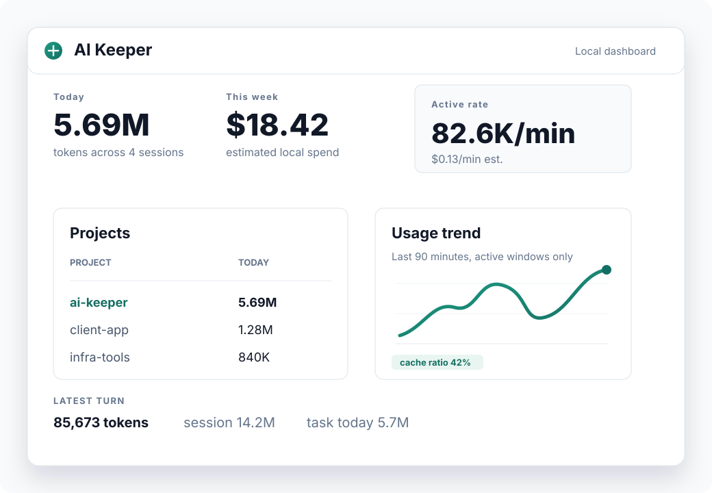

Project and task totals
See where tokens go across repositories, branches, tasks, sessions, and turns.
Understand your AI coding spend without giving up privacy.
Track Codex tokens and estimated cost by project, task, session, and turn. Keep the useful numbers, leave prompts and assistant messages out of AI Keeper's database.

After each turn, AI Keeper can add a compact, clickable summary right where the work is happening.
AI Keeper turns local Codex metadata into a calm operating view for everyday AI-assisted engineering work.
See where tokens go across repositories, branches, tasks, sessions, and turns.
After each Codex turn, get current usage and a dashboard link directly in the chat.
Compare active tokens/min, estimated USD/min, cache ratio, and model efficiency.
Inspect ingest status, missing sources, service health, and metadata-only support bundles.
AI Keeper stores operational metadata: token counts, timestamps, model labels, cwd, git metadata, session ids, transcript paths, and ingest offsets.
No prompts. No assistant messages. No raw transcript copies.
Run a privacy audit any time and keep private markers in your local home directory, not in the repository.
Start the local daemon, install Codex hooks, and open the dashboard on your machine.
brew install alevkin/tap/aikeeperThe Homebrew formula runs the local setup after download. Need more control? Read the user guide.